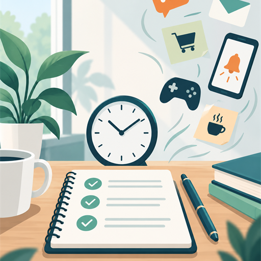

What is a time waster?
A time waster drains valuable time without contributing meaningful returns to productivity, effectiveness, or fulfillment.

Check the return
Some activities are necessary but still deserve a time check. Ask whether the activity contributes meaningful progress and whether its value justifies the time it receives.
Key idea
Time wasters can hide inside ordinary errands, habits, and tasks. The next step is to recognize the pattern.
Errand, habit, or task?
A time waster may appear as an errand, a habit, a task, or more than one category.
Select a category
Common workplace time wasters
Select a pattern to see what it looks like and one practical way to reduce it.
Personal time-waster audit
Choose one useful response for protecting time after you identify the pattern.
Select one pattern